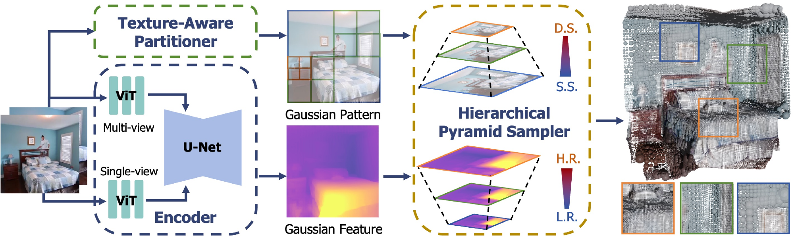
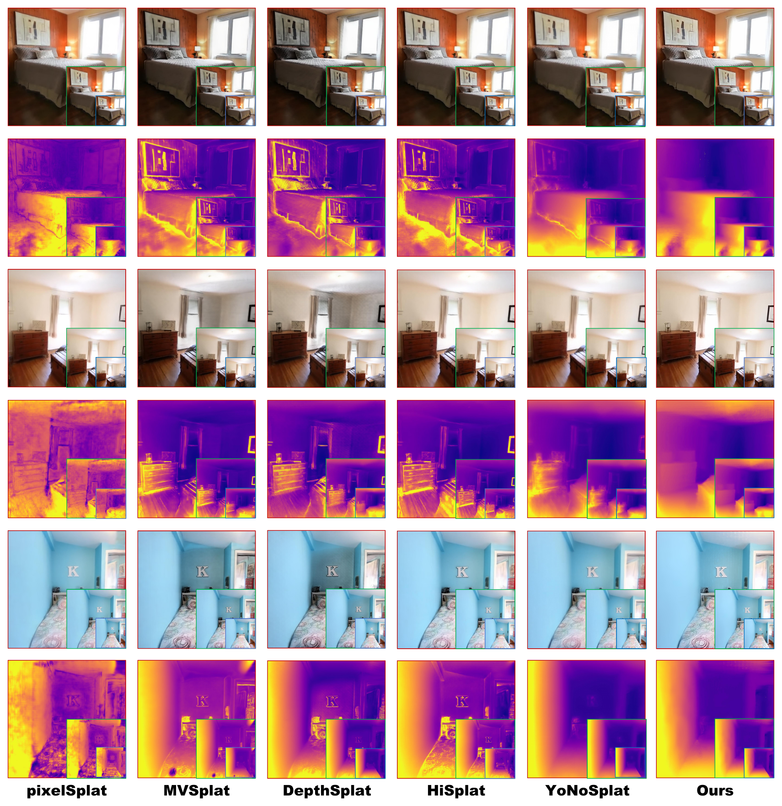
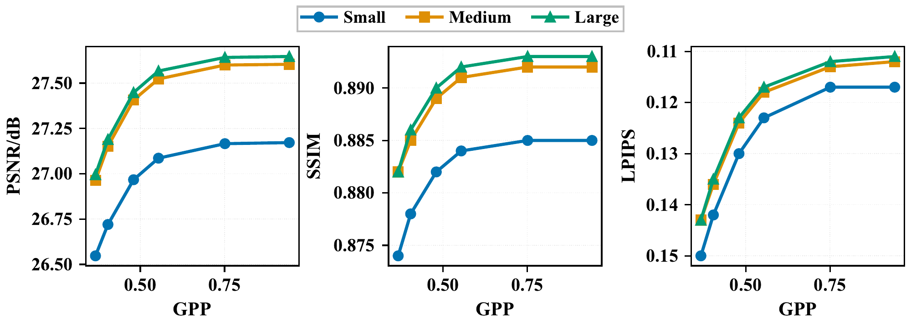
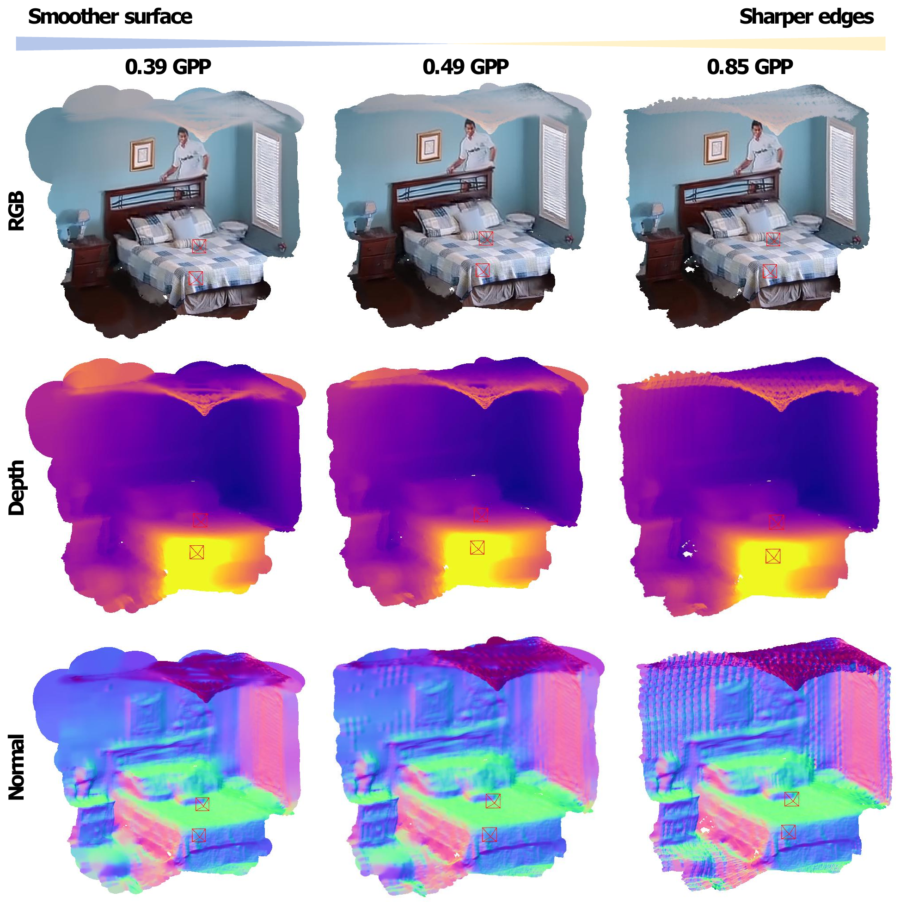

fewer Gaussiansvs. a one-Gaussian-per-pixel baseline
native-resolution PSNRCompactSplat-L · RealEstate10K
adjustable sparsity at inferencecontrolled by the partition threshold τ
Abstract
Feedforward Gaussian reconstruction commonly assigns a fixed number of primitives to every input pixel, regardless of local scene content. This produces redundant representations in smooth regions and limits control over the size of the reconstructed scene.
CompactSplat introduces content-adaptive Gaussian allocation through a Texture-Aware Partitioner (TAP) and a Hierarchical Pyramid Sampler (HPS). TAP partitions each input image according to local appearance variation. HPS samples a multi-resolution attribute field at a matching scale, producing dense primitives around detail and larger primitives over homogeneous regions. A single threshold adjusts sparsity at inference without retraining.
Built on the DepthSplat/SurfSplat backbone, CompactSplat preserves strong rendering quality with fewer primitives. On RealEstate10K, the large model uses 0.554 Gaussians per input pixel while achieving 27.567 dB PSNR at native resolution. High-resolution rendering is evaluated using SurfSplat’s HRRC protocol; the contribution is compact allocation while retaining the backbone’s surface-continuity behavior.
Overview
From two posed images to a compact scene representation.

Partition by content
A quadtree subdivides regions with greater RGB variation, while homogeneous regions remain in larger blocks.
Sample at the right scale
Each leaf samples Gaussian attributes from a corresponding pyramid level, aligning the sampling footprint with the region it represents.
Control the representation
Block size modulates primitive scale. Adjusting τ changes the primitive budget using the same trained weights.
2 calibrated context views · 256 × 256 inputs on RealEstate10K · τtest = 0.02 · τtrain ∼ U(0, 0.02). Rendering at ×2 or ×4 uses the same reconstructed Gaussians.
These are the paper settings. The current implementation snapshot uses a different partition criterion and training threshold range; see the reproducibility notes before reproducing the tables.
Results
High-resolution rendering, with fewer primitives.


RealEstate10K
Selected baselines and all CompactSplat model sizes.
| Method | PSNR ↑ | SSIM ↑ | LPIPS ↓ | GPP ↓ | Gaussians ↓ |
|---|---|---|---|---|---|
| pixelSplat | 26.049 | 0.862 | 0.137 | 3.000 | 393.2k |
| MVSplat | 26.359 | 0.868 | 0.129 | 1.000 | 131.1k |
| DepthSplat | 27.504 | 0.890 | 0.112 | 1.000 | 131.1k |
| SurfSplat | 27.537 | 0.892 | 0.112 | 1.000 | 131.1k |
| CompactSplat-S | 27.086 | 0.884 | 0.123 | 0.554 | 72.6k |
| CompactSplat-B | 27.523 | 0.891 | 0.118 | 0.554 | 72.6k |
| CompactSplat-L | 27.567 | 0.892 | 0.117 | 0.554 | 72.6k |
At native resolution, CompactSplat-L is close to SurfSplat in PSNR (+0.030 dB), ties its SSIM, and has higher LPIPS (0.117 vs. 0.112), with 44.6% fewer Gaussians.
Values are transcribed from manuscript Table 1, not newly reproduced runs. GPP is Gaussians per input pixel; counts are unchanged across rendering resolutions. The table is a selected comparison, not a claim of superiority over every method.
One model, different sparsity levels
A partition threshold trades representation size against fidelity at inference.




Discussion & limitations
CompactSplat changes where and at what scale primitives are allocated, while reusing a proven feedforward backbone. HRRC and the surface-continuity prior originate in SurfSplat. The results support retaining high-resolution rendering quality under sparsification; they do not establish watertight geometry or isolate every component’s contribution.
Other non-pixel-aligned approaches explore learnable tokens (TokenGS and C3G), voxel-aligned prediction (VolSplat), or subpixel primitive detection with adaptive patch density (Off The Grid). CompactSplat uses a hierarchical image-space quadtree, with a tunable partition threshold and scale-matched attribute sampling. These are complementary design choices; performance depends on the input protocol and primitive budget.
Scope of the current evidence
- Calibrated cameras are required. CompactSplat assumes camera intrinsics and extrinsics; pose-free approaches such as VGGT and AnySplat also estimate cameras from images.
- Cross-view redundancy remains. Allocation is performed per view. The gains from adding cross-view merging have not been established.
- Appearance is an imperfect guide. Noise and specularities can trigger extra subdivisions, while weak color changes may hide depth discontinuities.
- Component attribution remains incomplete. An isolated HPS comparison against finest-level-only sampling and transfer to a backbone without the surface prior are not established by the current results.
This repository contains training and evaluation source code. CompactSplat checkpoints are not yet published; upstream DepthSplat weights are not CompactSplat checkpoints.
BibTeX
@inproceedings{he2026compactsplat,
title = {CompactSplat: Spatially Adaptive Gaussian Distribution
for Feedforward Scene Reconstruction},
author = {Bing He and Jingnan Gao and Yunuo Chen and
Zhengxue Cheng and Rong Xie and Li Song and Wenjun Zhang},
booktitle = {Advances in Neural Information Processing Systems},
year = {2026},
url = {https://openreview.net/forum?id=3sn6PeO6Ch}
}